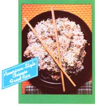

Preserving beef, chicken, pork, and wild game is just a matter of...
(Much of the following material was excerpted and adapted, with permission, from the Ball Blue Book: The Guide to Home Canning and Freezing, published by Ball Corporation, Muncie, Indiana.)
There are any number of good reasons to can meat. For one thing, doing so can save a lot of future cooking (for those times when you need to prepare a meal in a hurry), and it's also a practical solution to the "overstuffed freezer" problem (which faced the author of the accompanying sidebar). Many people, though, hesitate to go this route, because they think it might be dangerous. However, that simply isn't so. Canning meat is as safe as is processing any other low-acid food in the same manner. You just have to follow the correct procedures.
Bacterial growth is hindered by the acid in food ... and meat is very low in acid. Worse yet, certain harmful bacteria thrive where natural acidity is low, and these cannot readily be destroyed at the boiling point of 212 IF. To can meat, therefore, you must superheat it to 240F, which means it must always be processed by pressure canning... not with boiling water baths, which are fine for preserving such high-acid foods as sauerkraut.
Be aware, too, that the flavor and texture of any canned meat will depend upon the breed, the feed, and the manner in which the animal was handled at the time-and immediately after-it was killed. If you want to process your own livestock, contact your local county agricultural agent for complete information on slaughtering, chilling, and aging it.
CLEAN AND READY
The first step in meat canning is to assemble all the needed equipment and utensils and to wash them thoroughly. Clean the petcock and safety valve of the pressure canner by drawing a string through the openings ... and-if you have a dial gauge-be sure the pressure gauge is accurate. If it's not, the processing won't be correct, and some bacteria, including botulinum, may not be killed. (Again, your county extension agent or the manufacturer of the canner usually can tell you where to have dial gauges checked.)
Look over all your jars for nicks and cracks, and wash the containers and their closures in hot, soapy water ... rinse them well ... and keep them in hot water until they're ready for use. Don't use wire brushes, steel wool, or washing soda for cleaning these receptacles, as they're likely to damage the glass. In handling the jars, take care that they don't crack or break because of sudden changes of temperature. Never put a hot jar on a cold surface or in a draft ... and never pour boiling liquid into a cool container.
"One trip" jars, such as the ones in which you buy commercially made mayonnaise, peanut butter, or instant coffee, should not be used for canning purposes.
MEATY FACTS
To prepare the meat, cut slabs of about an inch thick, slicing across the grain, then cut with the grain until you have pieces of an appropriate size for the jars you're using. (If it's to be used for stew, cut the meat into uniform cubes.)
Make certain that you trim away gristle, bruised spots, and fat. Too much fat is likely to give the meat a strong flavor and may also damage the compound used for sealing the jars. Furthermore, you should not let meat stand in water ... with the exception of strongf-lavored game, which should be soaked in salt water before it is canned.
Prepare and pack the meat according to the recipes below, and process it for the time prescribed. Keep in mind, though, that because air is thinner at higher altitudes, it affects both pressure and boiling point. The times given in the recipes here are for foods to be processed at altitudes under 2,000 feet. For higher elevations, half a pound of pressure is required for each additional 1,000 feet above sea level. So, if you live at a high elevation and your pressure canner has a weighted gauge rather than a dial one, use 15 pounds of pressure instead of 10. Do not raw-pack meats for pressure processing at altitudes above 6 1 000 feet.
Only enough food for one canner load should be prepared at a time. Special care should be taken in filling the jars ... and headspace?the area in the jar between the inside of the lid and the top of the food or liquid-should be carefully measured to achieve proper venting and sealing. If too little headspace is allowed, the food may expand and bubble when air is being forced out from the lid during processing, leaving a deposit on the rim of the jar or lid that will prevent the container from sealing correctly. If there is too much headspace, the food at the top is likely to discolor, and/or the jar may not seal properly because insufficient processing time won't drive all the air out of the container.
After the food has been packed in the jar, any air bubbles present should be removed by running a clean wooden spoon or plastic paddle between the food and the jar. Knives and other metal devices are not recommended, since they may nick the bottoms of the jars, leading to breakage. A commercially produced plastic bubble-freer that doesn't melt or bend with ordinary kitchen use is ideal.
The tops of the jars, screw threads, and top surfaces of rubber rings (if they're used) should be wiped with a clean, damp cloth, as particles of food that remain in such places could prevent a tight seal. When placing closures on your containers, follow the manufacturer's directions carefully, since the method varies with the type of jar used.
To minimize the possibility of contamination by microorganisms, process the meat immediately after the containers are closed. Put 2 or 3 inches of hot water in the canner (or whatever amount is recommended by the manufacturer), set it on your heat source, and place the jars inside ... in a manner that allows steam to flow freely around each vessel. Fasten the canner's cover securely, making sure that steam escapes only through the petcock. Allow steam to vent steadily (according to the manufacturer's directions, or for 10 minutes) to drive all the air out. Otherwise, you'll have air pressure as well as steam pressure inside, and you'll get a faulty gauge reading. When that's done, close the petcock, or-if the gauge is weighted-put the weight in place. Follow the manufacturer's instructions to determine when 10 pounds of pressure has been reached, and start counting processing time at this point. (Refer to those instructions before opening the canner, too.)
CANNED ROAST
Begin by cutting the beef, veal, lamb, mutton, pork, chevon, or venison into chunks, and then bake or roast them until they're well browned (but not done through) ... or brown them in a small amount of fat. After adding salt to suit your taste, pack the hot meat into your preheated jars and cover the meat with hot gravy or broth, leaving an inch of headspace. Adjust the caps, and process the jars at 10 pounds of pressure (an hour and 15 minutes for pints, an hour and 30 minutes for quarts).
HOT-PACKED STEAKS OR CHOPS
Cut the beef, veal, lamb, mutton, pork, chevon, or venison into Iinch slices, removing any large bones as you do so. Quickly brown the meat in a small amount of fat, and salt it to please yourself Pack the freshly cooked slices into hot jars, cover the meat with steaming gravy (leaving an inch of headspace), and adjust the jar caps. Process pints for an hour and 15 minutes, and quarts for 15 minutes longer ... both at 10 pounds of pressure.
COLD- OR RAW-PACKED STEAKS OR CHOPS
Slice any of the meats mentioned above into 1-inch thicknesses, removing all large bones. Pack the meat into hot jars, leaving an inch of headspace. Add 1/2 teaspoon of salt per pint (a whole teaspoon for a quart), adjust the caps, and process pint jars for an hour and 15 minutes at 10 pounds of pressure. Quarts need another 15 minutes at the same pressure.
WILD RABBIT AND SQUIRREL
Soak the meat for an hour in brine made by dissolving I tablespoon of salt per quart of water to be used. Rinse the meat, and then-omitting the salt-use any of the following recipes for canning poultry. (In most states, the storage of game is regulated by law. Conservation officials can supply information on this subject.)
BONED BIRD
For canning, one- and two-year-old fowls are better than younger ones. After picking and washing the birds, cut the skin between the legs and the body ... bend the legs until the hip joints snap . . . slip your knife under the ends of the shoulder blades ... cut up to the wings ... pull the back and breast apart ... remove the entrails ... rinse the meat ... dry it ... and chill it for 6 to 10 hours. Don't salt the poultry.
Steam or boil the fowl until it's about two-thirds done. Next, remove the skin and bones. Pack the meat into hot jars, leaving an inch of headspace, and add 1/2 teaspoon of salt to a pint (or 1 teaspoon to each quart). Skim off the fat, then reheat the broth to boiling and pour it over the meat, maintaining the inch of headspace. Finally, adjust the caps. Processing should take an hour and 15 minutes for pints, and 15 minutes longer for quarts ... both at 10 pounds of pressure.
HOT-PACKED BIRD ON THE BONE
After preparing and chilling the fowl as directed for boned bird, boil, steam, or bake it until it's two-thirds done. Separate the birds at the joints as for frying, then pack them into hot jars and add 1/2 teaspoon of salt per pint (or I teaspoon for each quart). Cover the birds with boiling broth, leaving an inch of headspace, and adjust the caps. At 10 pounds of pressure, processing should take an hour and 15 minutes for pints, and 15 minutes longer for quarts.
FINISHING UP
After processing, your product should be allowed a 10-minute cooling period before the jars are removed from the pressure canner. If they're lifted too soon, a cool draft could cause the glass to break. Use a commercial jar lifter for safety's sake. This tong-like device usually has wooden handles to guard you against burns ... and soft polyethylene tips to protect the jars.
If food has boiled out of the tops of the containers during heating, don't try to readjust the lids, since this would probably break the seals. Instead, wipe the residue away when the jars are thoroughly cool. If, for any reason, a jar has obviously failed to seal, repack it. Then put on a new lid or rubber, and reprocess the container for the full length of time called for in the recipe ... or refrigerate the meat for prompt consumption.
When you remove jars from the canner, place them a few inches apart (to facilitate cooling) on cloths or wire racks, keeping them away from drafts to avoid breakage. Thoroughly cooled jars should be checked to see if a proper seal has been obtained, following the manufacturer's directions as to the specific types of tests to be applied for the particular type of closure used.
Generally, the seal of closures using rubber rings can be tested by tipping the jar. If any leakage occurs, or if bubbles start at the lid and rise through the contents, the jar isn't sealed correctly.
Modern, two-piece vacuum lids with metal screw bands are easily checked for a proper seal. A slight pinging noise may be heard as the jar cools, and this indicates that a vacuum has formed, sealing the meat. The center of the lid is pulled down by the vacuum, creating a slightly concave surface. If you're not sure that the surface is concave, push down in the center. If it doesn't push down, the container is sealed, but-if it does-the jar isn't sealed, and its contents have to be eaten or reprocessed promptly. If the lid is not concave, but pushes down and holds, the seal is questionable. In this case, remove the screw band and lift the jar by the edges of the lid. Care should be taken in doing this, because the jar may spill or break. When you've determined that a tight seal exists, remove the screw bands (if you haven't already done so). Bands left in place may become corroded, making the jars difficult to open.
Your containers of canned meat should be allowed to cool for 12 to 24 hours before being stored in a cool, dark, dry place. Remember that light hastens oxidation and destroys certain vitamins, and that dampness can cause the metal lids and closures to corrode or rust, endangering the seal.
It's a good idea to label each jar, including the date on which the food was canned.
IMPORTANT. Canned meat and other low-acid foods should always be cooked at a boiling temperature for 15 to 20 minutes before they're tasted or eaten.
|
 |
|
|